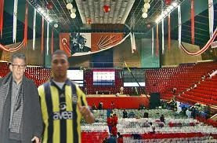

Duble
CHP'de çifte kurultay gündemi meşgul etmeye devam ediyor. Basındaki negatif yorumlara Kılıçdaroğlu "CHP kurultay yapmakta son derece başarılı bir partidir, seçmen Türkiye'nin yönetiminde bize niye güvenmiyor anlamıyorum, bu kadar kurultay yapmış bir parti niye Türkiye'yi yönetemesin?" sözleriyle cevap veriyor. Parti içindeki kaynaklara göre ikili kurultay ilahi bir oluş, adeta kutsal bir raslantı olarak görülüyor. Bu "ikili mucize"nin daha net vurgulanması için kurultaylardan biri sabah, diğeri akşam 2:22 saatinde, ve ikisi de 22 Şubat, yani 22/2 tarihinde yapılacak.Kurultaya hazırlık için altı ok prensipleri "iki ok" olarak tekrar düzenlenecek; iki ok değerleri "vesayet" ve "darbe" olarak kararlaştırıldı. Kurultayın özel durumunu vurgulamak için ünlü şahsiyetlerden Anter Anter ve Kazım Kazım konuk olarak çağırılıyor. Davet edilen bir diğer kişilik eski BM genel sekreteri Boutros Boutros Gali "isminin bu kutsal ana yakışacak kadar pür olmadığı" gerekçesiyle daveti geri çevirdi.
